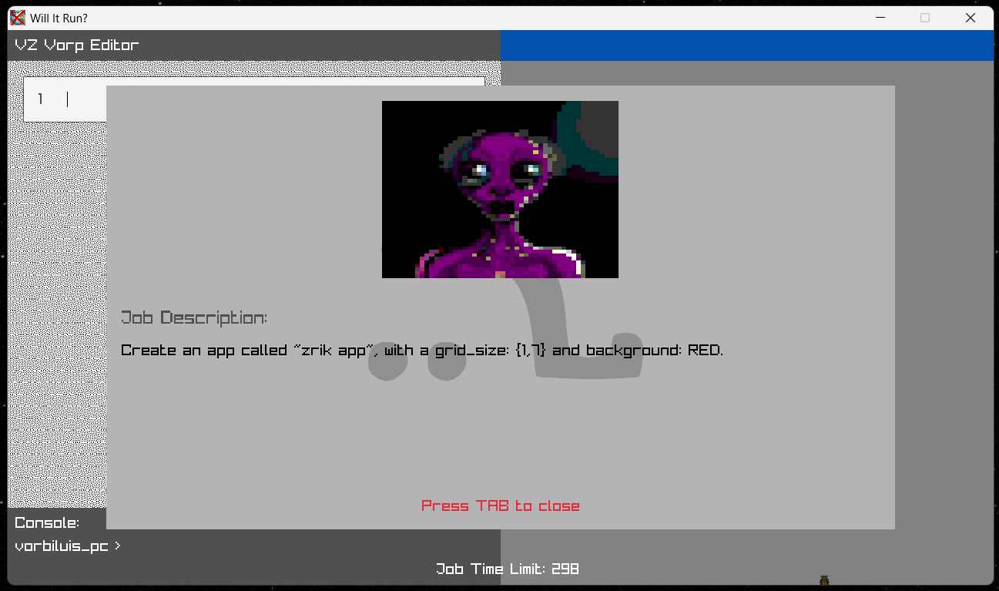
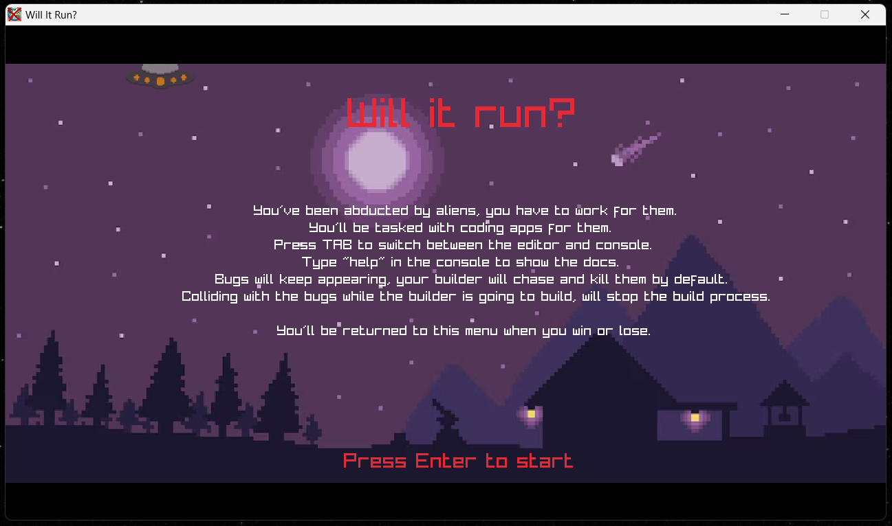
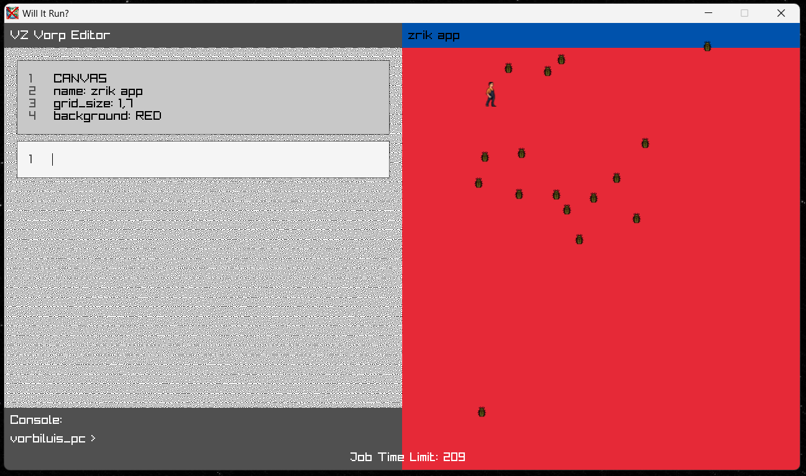

Will it run?
Project Description
This is an interesting game I made for the Ludum Dare 56 Game Jam, I coded the entire thing from scratch in C using Raylib as a backend, it was made in 72 hours "amidst a time of despair and misery" (quoted from the game page). It's a weird management game, where you basically get abducted by aliens and have to code apps for them while managing bugs that keep spawning in.
Technically speaking, I'd say I managed to do quite a bit considering the time limit, even though the gameplay lacked a bit, it was still fun to code and a massive learning experience. I basically created an entire programming language for the game, and created a whole fully functionning, and pretty feature rich text editor within the game, all with C mind you.
For all the art and audio I had my buddy help me out, so credits to him for making the good look and sound good.
Screenshots


